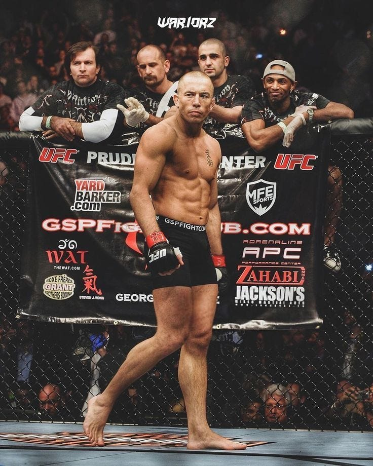

Georges St-Pierre - GSP
Georges St-Pierre este un fost luptător canadian de MMA și campion UFC la două categorii de greutate.
Era cunoscut pentru wrestlingul său, loviturile precise și pregătirea tactică.

MMA este un sport de contact care combină tehnici din mai multe arte marțiale. Într-o confruntare, sportivii pot folosi lovituri, doborâri și tehnici de finalizare la sol, respectând regulile competiției.
Printre disciplinele întâlnite în MMA se numără boxul, kickboxingul, wrestlingul, Brazilian Jiu-Jitsu și Muay Thai. Fiecare dintre acestea contribuie la pregătirea unui luptător complet.
Popularitatea MMA-ului a crescut foarte mult odată cu dezvoltarea organizației UFC. Sportul a evoluat de la confruntări între stiluri diferite la competiții între luptători pregătiți în mai multe discipline.

Georges St-Pierre este un fost luptător canadian de MMA și campion UFC la două categorii de greutate.
Era cunoscut pentru wrestlingul său, loviturile precise și pregătirea tactică.
